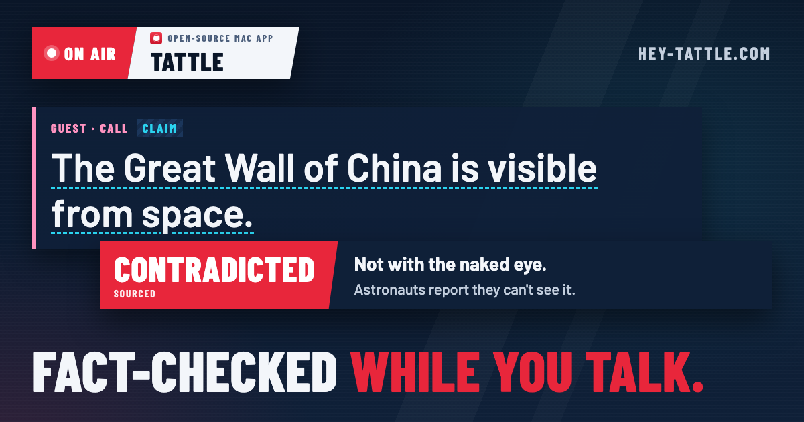
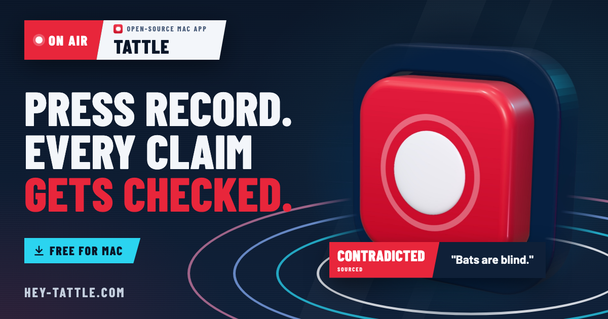
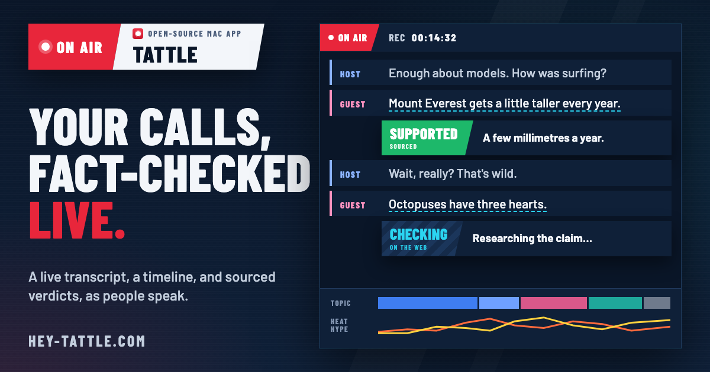
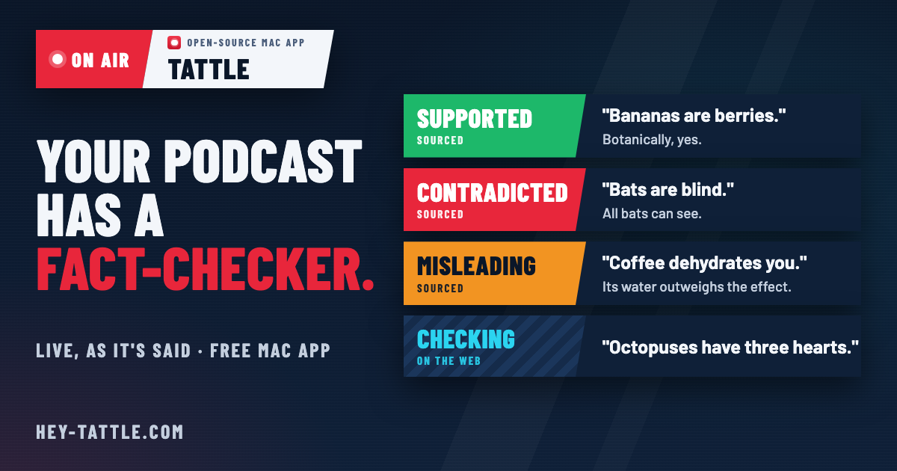
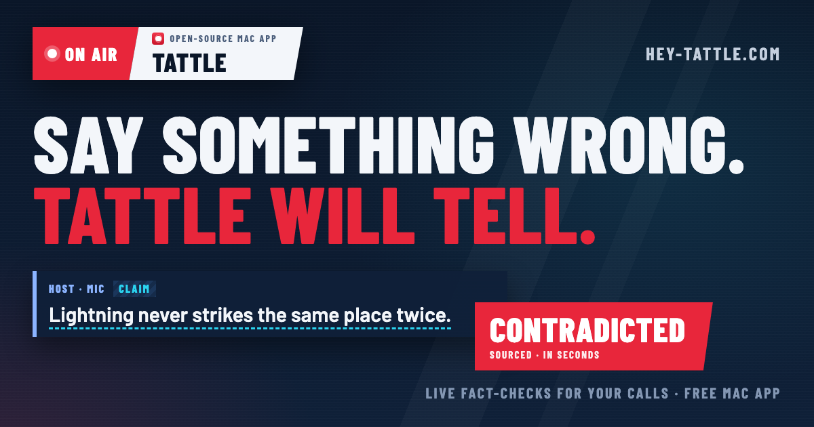

Link preview cards
Five candidates for hey-tattle.com's og:image, the picture a link to the site shows on X, LinkedIn, Slack, iMessage, WhatsApp and Discord. Each card is an HTML page in this folder (1200×630, the site's own tokens and fonts), rendered by node scripts/make-site-images.mjs. Each is shown full size, at feed size, and cropped square, as some chat apps show it. --ship <card> makes one the site's image (website/og.jpg).
01 · Caught live
A myth everyone knows, stopped by a CONTRADICTED lower third. One claim and one verdict read in under a second, and the tension is the hook.

02 · The record key Shipped
The site's own 3D record key and on-air rings. Brand first: the click lands on the same key the preview promised.

03 · The show on screen
A simplified view of the app during a call: transcript, verdicts, and the timeline. Clarity: you see what you get.

04 · True or false?
Four myths with their verdicts, the last one still being checked. The open verdict is the reason to click.

05 · Tattle tells
The name becomes the promise. The most memorable line, backed by a claim and its verdict.
